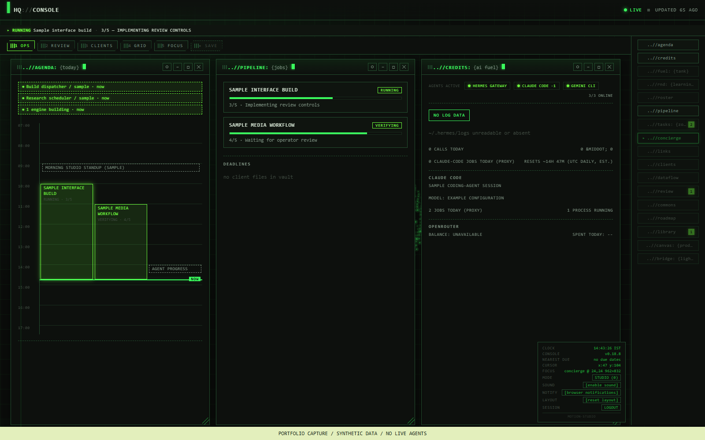
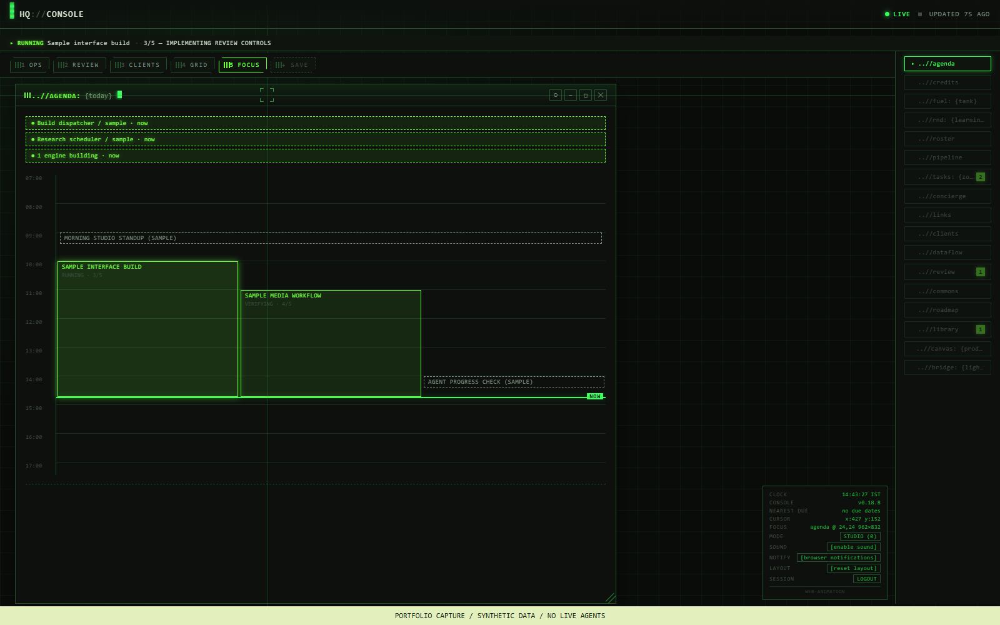
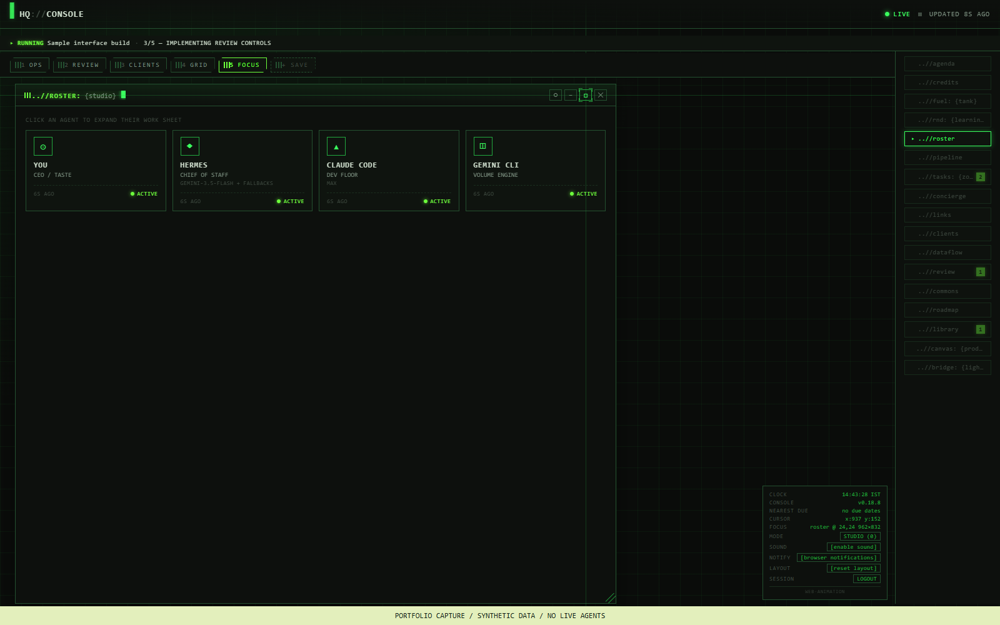
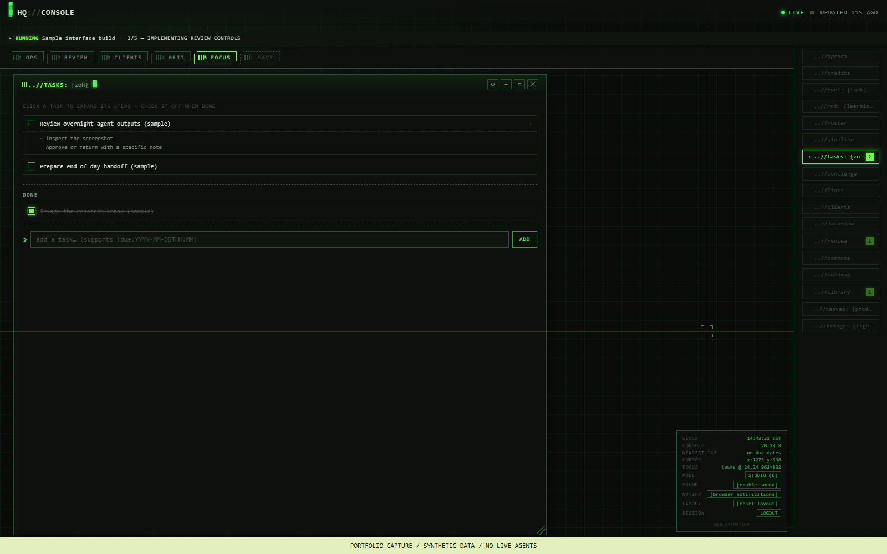
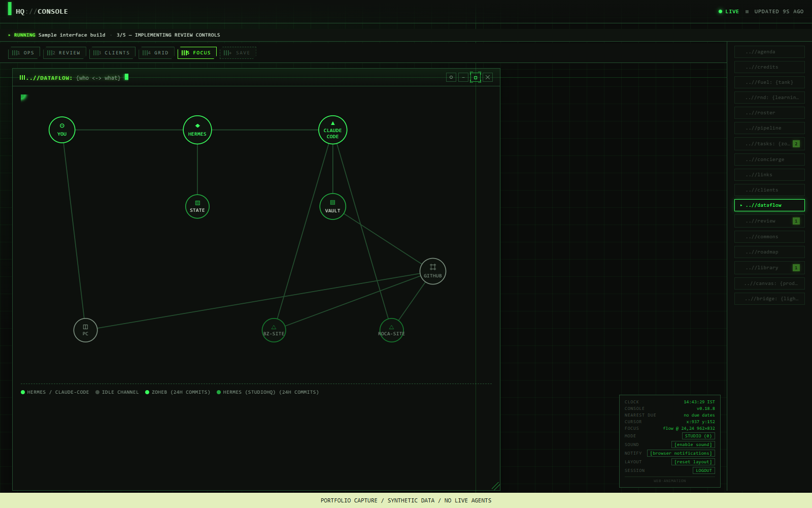
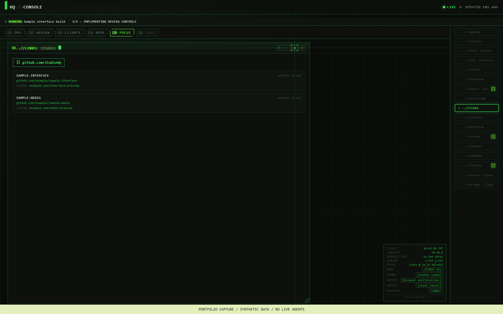
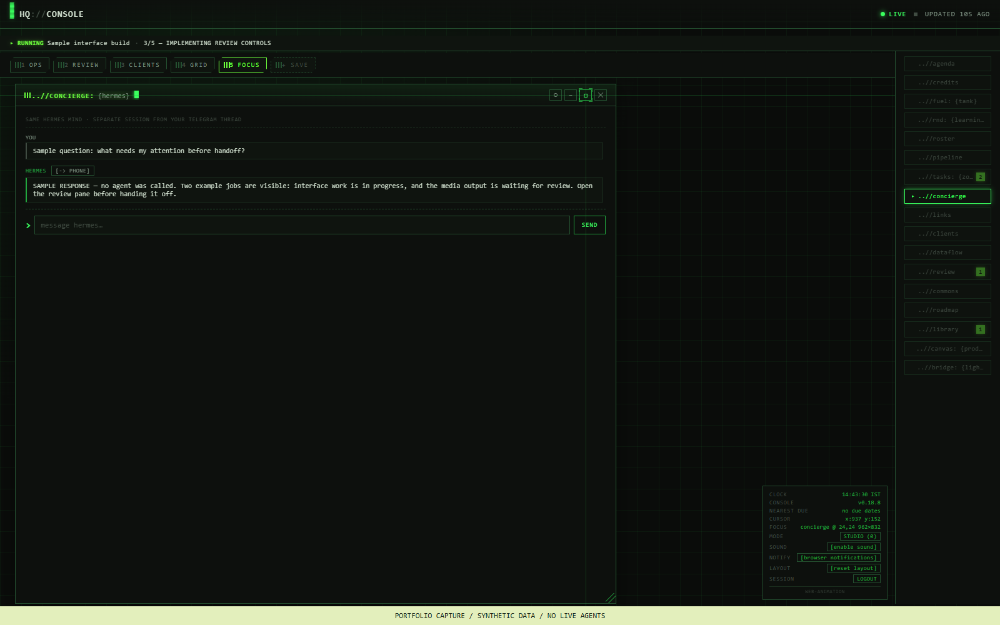
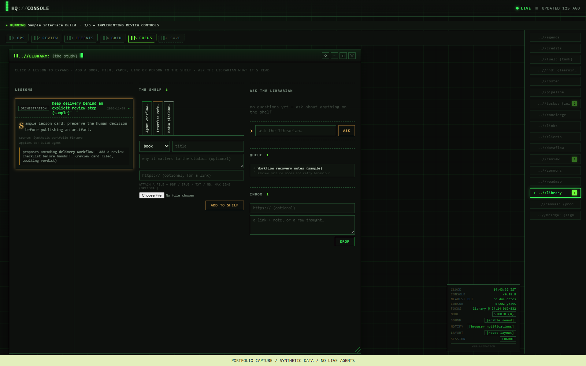
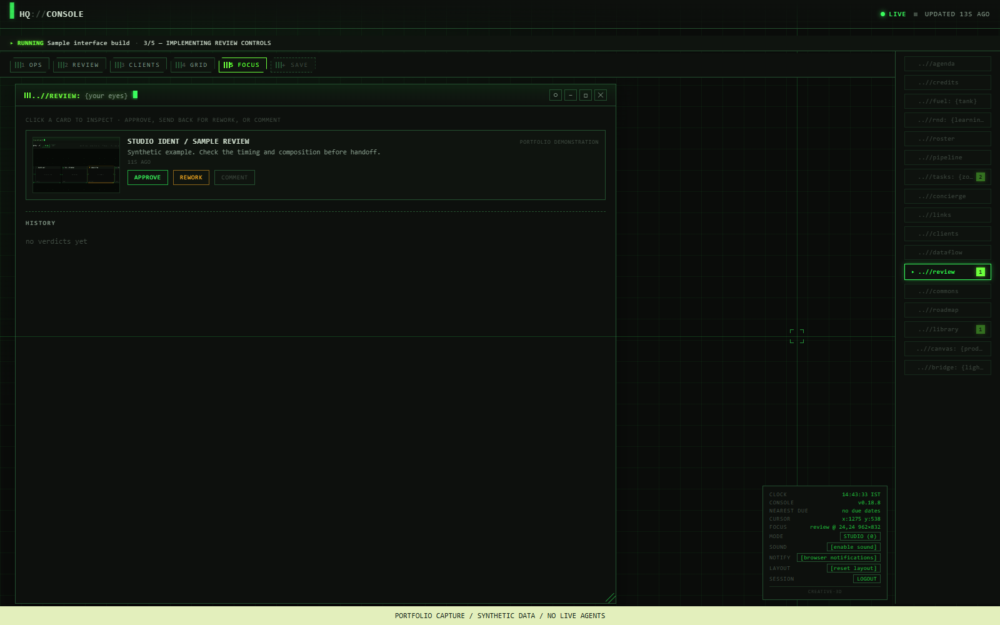

I built StudioHQ to bring studio tasks, agent activity, media pipelines and review decisions into one interface. It connects a Node.js console to a Git-backed workspace and external agent tools.
My contributionProduct direction, interface design and AI-assisted implementation
ContextIndependent studio tooling
StatusPreviously self-hosted; paused to reduce running costs
Screenshots show the actual app UI with synthetic portfolio data. They demonstrate the interface, not live agent activity or measured performance. Private source and client records remain private.
Console tour / Actual interface
The whole workspace.
Open a view to explore the interface. Each image preserves the full desktop frame; tap it for the original resolution. Sample records replace private work, and the banner identifies these as portfolio captures.
01 / The full operations workspace
Standups, work in progress and agent status sit together in the OPS layout. Movable panes and saved loadouts let me switch between monitoring, review and focused work.

02 / Daily standups & orchestration
The agenda combines scheduled routines with job intervals. Active service and worker indicators show activity outside the job files. Example standup times and running states are synthetic.

03 / Agents with different responsibilities
The roster separates the operator, Hermes, Claude Code and Gemini CLI. Cards expose role, activity and work details. The broader vault holds task-specific personas and instructions.

04 / Daily routine tasks
A Markdown-backed checklist supports quick additions, completion and expandable steps. It gives recurring work a visible place beside agent jobs.

05 / How agents, state and repositories connect
The data-flow graph maps the operator, agent tools, vault and repositories. Its activity cues use repository history; it is an operational map, not a distributed trace of every model call.

06 / GitHub & staging links
Repository links, last-commit times and staging URLs connect implementation to a reviewable deployment. This is the existing links pane, not a GitHub Actions run-status monitor.

07 / Hermes chat, inside the workspace
The concierge calls a dedicated Hermes CLI session. Replies can be forwarded to the phone. This screenshot uses a simulated response and does not send a Telegram message.

08 / A library that turns references into lessons
The Study holds references, a reading queue and distilled lesson cards. The separate Librarian runner can propose skill amendments as review cards. The pictured content is a synthetic example of that workflow.

09 / Human review before handoff
Approve, rework and comment controls keep the operator involved. Review cards preserve the decision and its context in the vault. The screenshot and review history here are sample data.
